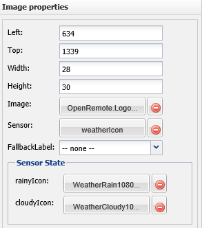

Forums : Custom Sensors with Images stopped working
This page last changed on Sep 15, 2014 by jacksmi.
I had several custom sensors that were linked to images. They were working just fine until a week ago. Now none of them work. The problem appears to be that the state information is not being set in the link tag for the images anymore. As a test I added these sensors to a label and what I get back is the "value" text not the "name" text. I created a new and simpler sensor to test this with a new image and still no luck. Below is the snippets from the controller and panel xml that is being generated.
from controller xml
<image id="3710">
<include type="sensor" ref="240653" />
</image>
<sensor id="240653" name="weatherIcon" type="custom">
<include type="command" ref="3716" />
<state name="rainyIcon" value="rainy" />
<state name="cloudyIcon" value="cloudy" />
</sensor>
<command id="3716" protocol="http">
<property name="pollingInterval" value="10m" />
<property name="url" value="http://127.0.0.1:18581/controller/wunder.xml" />
<property name="xpath" value="//response/current_observation/icon" />
<property name="name" value="weatherIcon" />
</command>
from panel xml
<absolute left="634" top="1339" width="28" height="30">
<image id="3710" src="OpenRemote.Logo.30x32.png">
<link type="sensor" ref="240653" />
</image> <-- NOTE no state information
</absolute>
NOTE: The image has a png attached to each state from the sensor but those images do not appear in a state list off of the image.

{kind=link}